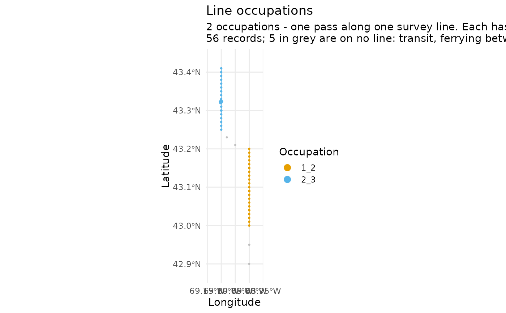
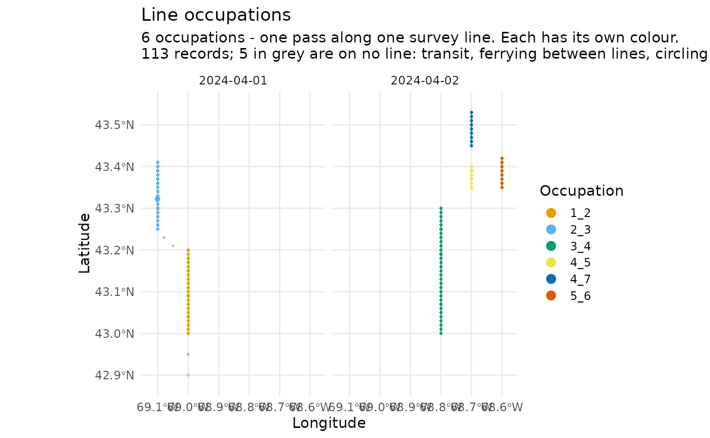

Draws the records as they stand at whatever stage they have reached, so a
segmentation can be checked before it is trusted. plot() on a
distsamp_segments object shows the finished result; this shows the steps
that produced it, where a mistake is still legible.
Usage
plot_survey(
dat,
what = c("effort", "occupations", "tracks", "platform", "legstage", "raw", "positions"),
coastline = TRUE,
max_points = 50000,
max_legend = 12,
facet_by = NULL,
dates = NULL,
years = NULL,
months = NULL,
sightings = FALSE
)Arguments
- dat
A survey data frame at any stage:
LATITUDEandLONGITUDEare required, and each view needs the column it colours by.- what
Which view:
"effort"(default),"occupations","tracks","platform","legstage","raw", or"positions".- coastline
Land to draw underneath.
TRUE(default) fetches Natural Earth throughrnaturalearth;FALSEdraws none; a scale name —"small","medium","large"— picks the resolution; or pass your ownsf, which is the better option at bay scale. Unlikeplot.distsamp_segments(), a coastline that cannot be fetched here warns and draws nothing rather than erroring: this is a look-at-it function, and losing the land is better than losing the plot.- max_points
Thin to at most this many records. Default
50000.- max_legend
Most groups to name in the legend. Default
12. Beyond this, occupations and tracks take a recycled palette and the legend is dropped — a hundred labels is not a legend, and a hundred colours cannot be told apart.- facet_by
Column to facet on, or
NULLfor none. Defaults toDATEwhen the data covers 2 to 12 days — beyond that the panels are too small to read, and one map of everything is more use.- dates, years, months
Which survey days to draw, passed to
filter_days().NULL(default) draws all of them. A decade of survey on one map is a smear;years = 2019, months = 8is a question a map can answer.- sightings
Draw the sightings over the effort?
FALSE(default) draws none,TRUEdraws every species, and a character vector ofSPECCODEvalues draws only those —sightings = "RIWH". They are taken from the data before thinning, since a few thousand sighting rows in three million would not survive it, and are drawn as outlined markers so they read on top of the track rather than as more of it.
What each view is for
"effort"Positions coloured by
OnOff.Effort. The first thing to look at: a survey that is almost entirely off effort has a criterion failing, and the map says whether it is everywhere or on particular days."occupations"Positions coloured by
LEGNO3, the line-occupation identifier. Adjacent occupations take different colours, so a line that should be one occupation and is drawn in three — or three that are drawn as one — is visible immediately. This is the view that catches a badmake_leg_id(), and a badLEGNO3is the single most consequential thing that can go wrong: effort is grouped by it and segments are cut within it."tracks"Positions coloured by
new_trackno, the stretches of continuous effort that are actually chopped into segments. Differs from"occupations"wherever effort broke mid-line."platform"Positions coloured by
PLATFORM_KINDfromnarwcr::classify_platform(). For an archive holding more than one kind of survey."legstage"Positions coloured by
LEGSTAGE. Shows where a line begins, breaks off, resumes and ends — and, on a file that records the code only at change points, how little of it is written down."raw"Every position, coloured by
LEGTYPE, needing nothing but the file as read. What the survey looks like before any of this package has touched it — the view to compare the others against when a later stage seems to have lost something."positions"Every position, uncoloured. The only view that cannot fail for want of a column: it needs
LATITUDEandLONGITUDEand nothing else, so it works on a file that has not been throughprepare_aerial(), or one whose columns are not what you expected. Where"raw"still asks forLEGTYPE, this asks for nothing. Addsightings = TRUEand it is the whole survey — effort and what was seen on it — in one map.
Thinning
A survey archive can hold millions of positions, and a scatter plot of five
million points is neither drawable nor readable. The plotted points are
thinned to max_points by taking every nth. The subtitle says when it
happened. Set max_points = Inf to draw every point.
Thinning never applies to the path. Every nth preserves the shape of a
straight line and loses it at every turn, so a path drawn through the
survivors cuts the corners: at three million records that is a chord between
fixes some 18 km apart, and against a coastline it draws a trackline over
land that is not in the data. The lines in the "occupations" and
"tracks" views are therefore built from every fix, whatever max_points
says. On a whole archive that costs a few seconds of drawing, and it buys a
map that does not invent a mistake for you to go looking for.
See also
plot.distsamp_segments() for the finished segmentation,
diagnose_pipeline() for the same checks as numbers.
Examples
path <- system.file("extdata", "narwc-example.csv", package = "distsamp")
dat <- narwcr::flag_effort(narwcr::make_leg_id(narwcr::read_narwc(path, quiet = TRUE)))
plot_survey(dat, "occupations")
 # One day, or one month of one year
plot_survey(dat, "occupations", dates = "2024-04-01")
# One day, or one month of one year
plot_survey(dat, "occupations", dates = "2024-04-01")

plot_survey(dat, "occupations", years = 2024, months = "April")
